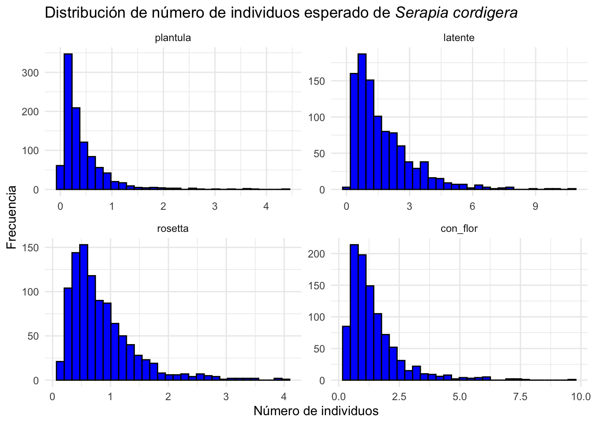
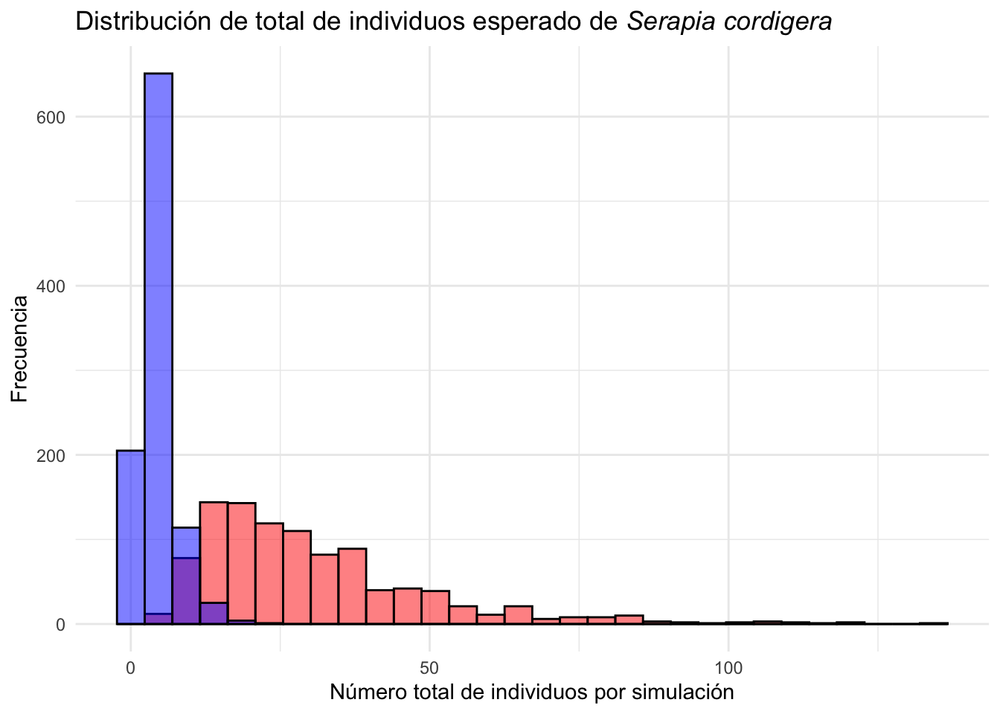
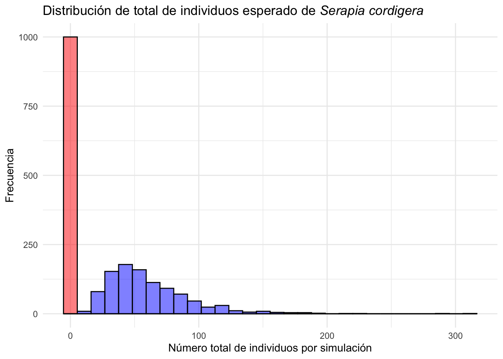
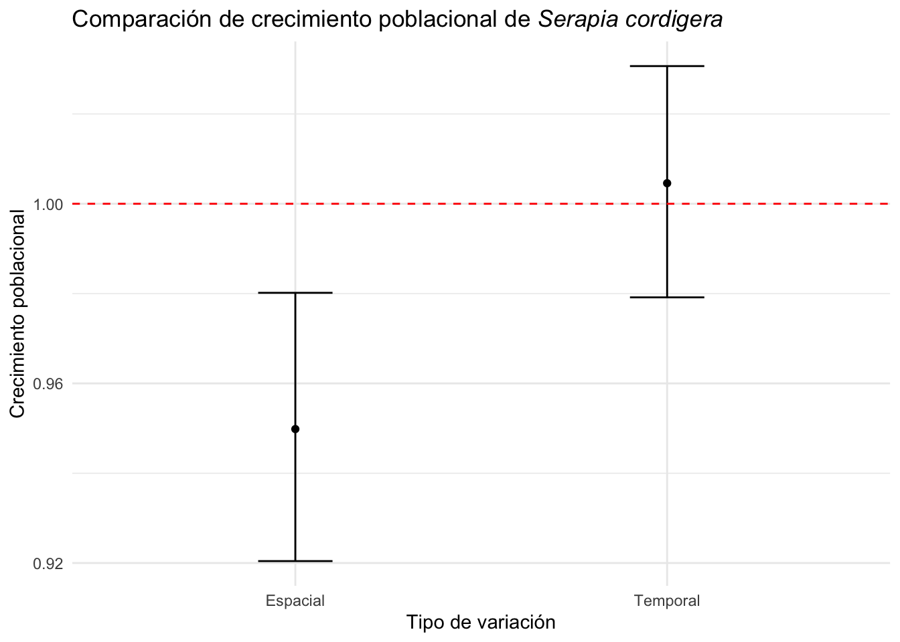

library(tidyverse)
library(ggtext)
library(janitor)
library(popbio)Variación Temporal y Espacial {##VarTempEsp}
Por: Raymond L. Tremblay
El termino biología pudiese ser un sinónimo de variación biológica. No hay dos organismos iguales, ni siquiera gemelos que sean completamente idénticos. La variación biológica es una característica fundamental de la vida y es la base de la evolución, no puede haber evolución sin variación. Cuando se considera los individuos, por ejemplos humanos, fácilmente reconocemos variación, en tamaño, color de ojos, susceptibilidad a cáncer o infección y efecto que tiene el ambiente (por ejemplo la dieta o acceso a la educación) entre muchos factores que impacta la supervivencia o crecimiento y reproducción. Pero desafortunadamente cuando se considera los animales y plantas de una misma especie frecuentemente se obvia la variación en los análisis. Podemos observar variación a múltiples niveles en una misma especie
- Variación sub-individual (dentro de un individuo), un concepto bien desarollado por Carlos Herrera de la Universidad de Sevilla (Herrera 2009).
- Variación entre individuos (dentro de una población).
- Variación entre poblaciones (entre poblaciones).
- Variación entre tiempo (entre periodos de tiempo).
Todos estos componentes de variación tendrán impacto en la dispersión de los estimados de los parámetros de la matriz de transición y el crecimiento poblacional en adición del comportamiento de la población en tiempo. Hay un componente que frecuentemente se deja por olvido es el efecto de la variación en tamaño de muestra pequeña en los estimados de los parámetros de la matriz de transición y el crecimiento poblacional, este es el efecto demográfico por tamaño de muestra. En este capítulo se discute el efecto de la variación en tiempo y espacio en los estimados de los parámetros de la matriz de transición y el crecimiento poblacional.
Componentes de Variación
La variación sub-individual
La variación sub-individual es la variación que se observa en un individuo. Por ejemplo, la variación en el tamaño o la cantidad de hojas, flores, frutos, semillas dentro del mismo individuo. Este tipo de variación es común en plantas y es un componente importante de la variación total pero raramente se considera en los análisis. Carlos Herrera ha demostrado claramente que este componente no solamente es parte de la variación total de las especies pero es importante para entender los procesos ecológicos y evolutivos (Herrera 2009). En adición cuando uno compara la variación total por la variación sub-individual, la variación sub-individual es mucho más grande que la variación entre individuos y poblaciones. Esta variación al conocimiento de los presentes autores nunca ha sido incluido en análisis de dinámica poblacional y integrado dentro un PPM. En un estudio del tamaño d e las flores en Lepanthes rupestris se observó que la variación en el tamaño de flores disminuye a largo de la inflorescencia y que la probabilidad de remoción de pollinia y de deposición de estas sobre el estigma no siguen el mismo patrón, la probabilidades de remoción de pollinia aumenta con flores más pequeñas pero la probabilidad de frutos disminuye (Tremblay 2006).
La variación entre individuos
La variación entre individuos es la diferencias que se observa entre individuos de una misma población o en diferentes poblaciones. Por ejemplo, la variación en el tamaño de los individuos, cantidad de hojas, cantidad de flores, cantidad de frutos entre individuos de una misma población influye en la probabilidad de sobrevivir, crecer y reproducirse. La variación entre individuos de diferentes tamaños o etapas impacta grandemente la supervivencia, crecimiento y reproducción de los individuos. Los trabajos de Harper y otros han demostrado que esa variación es común en las plantas (Harper et al. 1977) y típicamente es más importante que la edad de los individuos en la mayoría de las plantas.
La variación entre poblaciones
La variación entre poblaciones es la variación que se observa entre grupos de individuos de una misma especie. Poblaciones distintas pudiese ser influenciada por las diferencias abióticas y interacciones biótica única a cada población. Esa variación pudiese influenciar la dinámica de cada población y la dinámica de la especie en general. La diferencias entre poblaciones pudiese ser influenciado por condiciones especificas como la variación genéticas entre poblaciones, variación en el ambiente, variación en la interacción biótica, variación en la historia de la población (procesos de sucessión), entre otros factores, en adición que plasticidad fenotípica que se define como la interacción del ambiente sobre la expresión genética. Sin duda las variables abióticas y bióticas pueden influenciar las transiciones, estasis y reproducción de forma diferencial entre las diferentes etapas del ciclo de vida de la especie.
La variación entre tiempo
Este componente de variación incluye la variación típicamente relacionado a la variación abiótica que cambia de un periodo de tiempo a otro, por ejemplo el efecto de la cantidad de lluvia, números de días sin lluvia, temperatura entre muchos otras variables. Pero no se debería limitar a considerar solamente la variación abiótica en tiempo ya que la variación biótica también puede cambiar de un periodo de tiempo a otro. Por ejemplo la densidad y/o composición de especies en una comunidad cambia de un periodo de tiempo incluso la variación de patógenos y otras interacciones bióticas alrededor de la especie de interés. Todo las anteriores pudiese influenciar la dinámica y las estimado de la parámetros de la matriz. Por ejemplo considera la variación en presencia de herbívoros o patógenos que cambia de un periodo de tiempo resultando en variación en la competencia inter-especifica. Por consecuencia la variación en tiempo es mucho más que la variación abiótica en tiempo. Allí uno también tiene que incluir el efecto de bonanza (eventos raros positivos, ejemplo: reclutamiento excepcional en unos años)(Antonini, Dirzo, and Cassia Quitete-Portela 2020) y catástrofes (eventos raros negativos, ejemplo: huracanes, mortandad de un hospedero)(Hiernaux et al. 2009) que pudiese influenciar la dinámica de la especie de interés.
Variación en tamaño de muestra pequeña
La gran mayoría de los estudios usando MPP son para evaluar la probabilidad de supervivencia en una especies en peligro de extinción. La razón principal de estos estudios es que queda muy pocos individuos en la población o pocas poblaciones y esas poblaciones son considerando a riesgos.
Por ejemplo si tuviésemos en una población solamente de un adulto y este adulto sobrevive de un año a otro entonces la probabilidad de supervivencia es 1.0. Pero si tuviésemos solamente un adulto y este adulto muere entonces la probabilidad de supervivencia es 0.0. Las probabilidad de supervivencia pueden ser solamente 1.0 o 0.0 respectivamente y otros valores no son posibles, pero la interpretación biológica es sesgada, porque ya hay solamente dos alternativas. Pero si tuviésemos 1,000 o 10,000 individuos es muy poco probable que todos se mueren o todos sobreviven, y hay muchas alternativas posibles. Este es un ejemplo extremo pero ilustra claramente el problema de estimar la probabilidad de supervivencia y transiciones en una población con un tamaño de muestra pequeña y puede resultar en estimados sesgados.
En las próximas secciones vemos métodos de simulaciones y estimaciones de intervalos de confianza para abordar la variación biológica en tiempo y espacio y la variación por el tamaño de muestra pequeña.
Introducción a los métodos de simulaciones
Los métodos de simulaciones para estimar la variación en los parámetros tanto de la matriz como el crecimiento poblacional varia mucho. Lo que es consistente es que se utiliza dados disponible para hacer simulaciones y estimar la variación en los parámetros. En otra palabra se usa la variación entre los elementos de múltiples matrices de transición en tiempo o espacio o el tamaño de muestra para hacer simulaciones y estimar la dispersión en los parámetros. La manera de expresar la variación puede asumir diferentes formas, por ejemplo, la variación en los parámetros de la matriz de transición puede ser expresado como una distribución normal (distribución en forma de campana), una distribución de Poisson (Datos con valores discretos, 0, 1, 2…ect), una distribución binomial (distribución donde hay solamente dos alternativas) o beta (distribución donde la distribución es limitada a los valores entre y inclusivo 0 a 1), entre otras distribuciones. Reconociendo el tipo de variación en los parámetros de la matriz de transición es importante para escoger el método de simulaciones y estimaciones de intervalos de confianza y reconocer sus limitación y su interpretación.
Estocasticidad espacial
En este caso vemos el efecto de la variación espacial en la probabilidad en los estimados. Aquí nos interesa descubrir y cuantificar cuan variable son las poblaciones una del otro. El objetivo es determinar si las poblaciones se comporta similar una del otro o varía mucho de un sitio al otro.
Entrada de datos
El primer paso es definir la diferentes matriz, una por cada periodo de tiempo. En el siguiente script se enseña como entrar los datos para múltiples matrices en un solo objeto. Nota que es una lista de matriz.
Los datos provienen de un estudio de la dinámica de una población de Serapia cordigera de 1999 al 2012 evaluando el impacto antropogénico sobre la dinámica de la población (Pellegrino and Bellusci 2014). En este caso se emplea solamente 6 matrices de transición de la población de Serapia cordigera en 1999, tres de estas son poblaciones que tienen impacto antropogénico (A1, A2 y A3) y tres poblaciones naturales, sin impacto antropogénico (N1, N2, N3). Nota que se contruye una lista (list()) de matriz de transición, una por cada periodo de tiempo.
Serapia<-list(
A1_1999=matrix(c(
0.745, 0.152, 0.452, 0.564,
0.125, 0.000, 0.000, 0.000,
0.000, 0.321, 0.205, 0.342,
0.200, 0.365, 0.205, 0.185
),
nrow=4, byrow=TRUE,
dimnames=list(c("latente", "plantula", "rosetta", "con flor"),
c("latente", "plantula", "rosetta", "con flor")
)
),
A2_1999=matrix(c(
0.648, 0.203, 0.414, 0.604,
0.188, 0.000, 0.000, 0.000,
0.000, 0.342, 0.198, 0.377,
0.242, 0.264, 0.225, 0.191
),
nrow=4, byrow=TRUE,
dimnames=list(c("latente", "plantula", "rosetta", "con flor"),
c("latente", "plantula", "rosetta", "con flor")
)
),
A3_1999=matrix(c(
0.544, 0.223, 0.364, 0.498,
0.148, 0.000, 0.000, 0.000,
0.000, 0.249, 0.243, 0.287,
0.242, 0.303, 0.210, 0.101
),
nrow=4, byrow=TRUE,
dimnames=list(c("latente", "plantula", "rosetta", "con flor"),
c("latente", "plantula", "rosetta", "con flor")
)
),
N1_1999=matrix(c(
0.287, 0.271, 0.054, 0.107,
0.318, 0.000, 0.000, 0.000,
0.000, 0.438, 0.228, 0.273,
0.111, 0.512, 0.585, 0.542
),
nrow=4, byrow=TRUE,
dimnames=list(c("latente", "plantula", "rosetta", "con flor"),
c("latente", "plantula", "rosetta", "con flor")
)
),
N2_1999=matrix(c(
0.299, 0.253, 0.066, 0.182,
0.324, 0.000, 0.000, 0.000,
0.000, 0.461, 0.222, 0.264,
0.339, 0.568, 0.554, 0.547
),
nrow=4, byrow=TRUE,
dimnames=list(c("latente", "plantula", "rosetta", "con flor"),
c("latente", "plantula", "rosetta", "con flor")
)
),
N3_1999=matrix(c(
0.245, 0.156, 0.052, 0.147,
0.325, 0.000, 0.000, 0.000,
0.000, 0.422, 0.305, 0.252,
0.210, 0.465, 0.498, 0.485
),
nrow=4, byrow=TRUE,
dimnames=list(c("latente", "plantula", "rosetta", "con flor"),
c("latente", "plantula", "rosetta", "con flor")
)
)
)
Serapia$A1_1999
latente plantula rosetta con flor
latente 0.745 0.152 0.452 0.564
plantula 0.125 0.000 0.000 0.000
rosetta 0.000 0.321 0.205 0.342
con flor 0.200 0.365 0.205 0.185
$A2_1999
latente plantula rosetta con flor
latente 0.648 0.203 0.414 0.604
plantula 0.188 0.000 0.000 0.000
rosetta 0.000 0.342 0.198 0.377
con flor 0.242 0.264 0.225 0.191
$A3_1999
latente plantula rosetta con flor
latente 0.544 0.223 0.364 0.498
plantula 0.148 0.000 0.000 0.000
rosetta 0.000 0.249 0.243 0.287
con flor 0.242 0.303 0.210 0.101
$N1_1999
latente plantula rosetta con flor
latente 0.287 0.271 0.054 0.107
plantula 0.318 0.000 0.000 0.000
rosetta 0.000 0.438 0.228 0.273
con flor 0.111 0.512 0.585 0.542
$N2_1999
latente plantula rosetta con flor
latente 0.299 0.253 0.066 0.182
plantula 0.324 0.000 0.000 0.000
rosetta 0.000 0.461 0.222 0.264
con flor 0.339 0.568 0.554 0.547
$N3_1999
latente plantula rosetta con flor
latente 0.245 0.156 0.052 0.147
plantula 0.325 0.000 0.000 0.000
rosetta 0.000 0.422 0.305 0.252
con flor 0.210 0.465 0.498 0.485Simulaciones con igual probabilidad de selección
Si uno asume que hay igual cantidad de poblaciones afectada de forma antropogénicas y naturales entonces se puede hacer un análisis de la variación espacial en la probabilidad de supervivencia. Se puede simular el crecimiento con igual probabilidad de selección de las matrices de transición. En otra palabra cada matriz sera seleccionado al azar 1/6 de las veces. Este supuesto es razonable si uno asume que hay igual cantidad de poblaciones afectada de forma antropogénicas y naturales. El objetivo es ver la variación en la probabilidad de supervivencia en la población de Serapia cordigera en 1999 o mejor cual seria el tamaño de la poblacional típica de la especies si la especie se comporta como la siguientes matrices (Pellegrino and Bellusci 2014).
La función stoch.projection del paquete popbio permite hacer simulaciones de la dinámica de una población y da una lista de la cantidad de individuos esperado por cada etapa de la vida. Comenzamos por definir el tamaño de la población inicial por etapa de la vida, n, el nombre de las etapas de la vida y luego usamos la función stoch.projection para hacer las simulaciones.
n <- c(2, 0, 4, 99) # corresponde a la cantidad de individuos por etapa en la publicación del año 2000 del articulo Pellegrino et al. 2014
names(n) <- c("latente", "plantula", "rosetta", "con flor")
Serapia.eq <- stoch.projection(Serapia, n, nreps=1000) # simulación con igual probabilidad de selección
head(Serapia.eq) # vemos las primeras 6 simulaciones de los tamaños de muestra esperada por etapa latente plantula rosetta con flor
[1,] 1.8866928 1.41555127 1.0538136 3.4928936
[2,] 1.2373157 0.99617166 0.7653389 1.7327035
[3,] 3.5243584 0.58679957 0.8975466 1.5422464
[4,] 0.7073074 0.67475550 0.5817758 1.4184161
[5,] 1.7067602 0.09801714 0.8501070 0.6835445
[6,] 0.7934005 0.61013218 0.4613757 1.6323666Cual es la distribución de la cantidad de individuos esperado.
Para observar cuantos individuos hubiese en el futuro de la población de Serapia cordigera si la especie se comporta como las matrices de transición. Se observa que en la poblaciones tendrían pocos individuos típicamente menor de 2-3 individuo todas las etapas irrelevante si fuesen latente, plántula, rosetta o con flores.
Order the variable names “plantula”, “latente”, “rosetta”, “con flores”
Serapia.eq=clean_names(as.data.frame(Serapia.eq))
Serapia.eq %>%
gather(key="etapa", value="individuos") %>%
mutate(etapa=factor(etapa, levels=c("plantula", "latente", "rosetta", "con_flor"))) %>%
ggplot(aes(x=individuos))+
geom_histogram(bins=30, fill="blue", color="black")+
facet_wrap(~etapa, scales="free")+
theme_minimal()+
labs(title="Distribución de número de individuos esperado de *Serapia cordigera*",
x="Número de individuos", y="Frecuencia")+
theme(title = element_markdown())
La suma total de individuos por simulación es una medida de la cantidad de individuos esperado en el futuro. En el siguiente gráfico se muestra la distribución de la cantidad de individuos esperado en el futuro de la población de Serapia cordigera si la especie se comporta como las matrices de transiciones arriba y seleccionado al azar por la misma probabilidades. Se observa que la mayoría de las simulaciones tienen menos de 10 individuos en el futuro.
Serapia_eq_T=Serapia.eq %>%
mutate(total=rowSums(across(where(is.numeric))))
ggplot(Serapia_eq_T,aes(x=total))+
geom_histogram(bins=30, fill="blue", color="black")+
theme_minimal()+
labs(title="Distribución de total de individuos esperado de *Serapia cordigera*",
x="Número Total de individuos por simulación", y="Frecuencia")+
theme(title = element_markdown())
Simulaciones con diferente probabilidad de selección
La probabilidad de selección de las matrices de transición no tiene que ser igual. En el siguiente script se muestra como hacer simulaciones con diferente probabilidad de selección de las matrices de transición. En este caso se asume que hay las 3 poblaciones afectada de forma antropogénicas y que estas son más común (poblaciones afectada antropogenicamente) que las poblaciones naturales. Las 3 poblaciones naturales son poblaciones raras. En la sección del script vemos que ahora las poblaciones afectada de forma antropogénicas son seleccionadas con una probabilidad de 0.85 (.30 + .30 + .25) y las poblaciones naturales con una probabilidad de 0.15. En otra palabra las poblaciones naturales son muy raras, y la especies es dominada por sitio donde la especies es afectada de forma antropogénicas. Importante este es una simulación y no refleja la realidad de la especies ni la publicación.
n <- c(2, 0, 4, 99) # población inicial por etapa
names(n) <- c("latente", "plantula", "rosetta", "con flor")
Serapia.uneq <- stoch.projection(Serapia, n, nreps=1000, prob=c(.3, .3, .25, .05, .05, .05)) # simulación con igual probabilidad de selección
head(Serapia.uneq) # vemos las primeras 6 simulaciones de tamaño de muestra latente plantula rosetta con flor
[1,] 42.381152 4.988065 8.073065 14.042171
[2,] 8.853824 7.149775 5.613260 12.945469
[3,] 16.340610 1.823858 3.676047 5.771750
[4,] 3.253195 2.626769 2.062729 4.756288
[5,] 12.434800 12.551114 7.385229 20.090667
[6,] 14.874640 2.498281 3.789040 6.615873Comparar la distribución de cantidad de individuos esperado por simulaciones
Ahora vamos a solapar las dos distribuciones (la de selección por igual y por poblaciones mayormente impactado por humanos) para ver si hay una diferencia en la distribución de tamaño de muestra entre las dos simulaciones. Los resultados de la simulaciones siguiere que las poblaciones afectada de forma antropogénicas (rojo) tienen una mayor cantidad de individuos en el futuro que las poblaciones naturales (azul).
Serapia.uneq=clean_names(as.data.frame(Serapia.uneq))
Serapia.uneq_T=Serapia.uneq %>%
mutate(total=rowSums(across(where(is.numeric))))
ggplot(Serapia.uneq_T, aes(total))+
geom_histogram( bins=30, fill="red", color="black", alpha=.5)+
geom_histogram(data=Serapia_eq_T, aes(x=total), bins=30, fill="blue", color="black", alpha=.5)+
theme_minimal()+
labs(title="Distribución de total de individuos esperado de *Serapia cordigera*",
x="Número total de individuos por simulación", y="Frecuencia")+
theme(title = element_markdown())
Simulación de crecimiento poblaciónal de Serapia cordigera
En el siguiente script podemos evaluar el crecimiento poblacional y su variación en el espacio.
Nota aquí se calcula el log(crecimiento poblacional estocástica) de la especies de Serapia cordigera por aproximación y simulaciones siguiendo la formula de Tuljapukar (Tuljapurkar 2013). Se puede ver que la especies tiene un crecimiento poblacional negativo en la mayoría de las simulaciones. Esto sugiere que la especies esta en declive. Pero también se puede ver que hay una variación en el crecimiento poblacional de la especies. El script incluye un parámetro para indicar por cuanto tiempo queremos que la simulación ocurre, maxt=, en esta caso se simula por 50 periodos de tiempo, si no se añade nada la simulación dura por 50000 periodos de tiempo. Nota que maxt es en el tiempo de periodo de la matrix de transición, si esta fue construida en un periodo de meses, entonces la simulación es ese intervalo de tiempo.
Cuando se usa el log de crecimiento poblacional estocástica se calcula \[r\], ese valor es \(r=ln(\lambda)\) y \(r\) se interpretación de forma diferentes que los valores de lambda,
- \(r\) = log(crecimiento poblacional estocástica) > 0 la población crece
- \(r\) = log(crecimiento poblacional estocástica) < 0 la población decrece
- \(r\) = log(crecimiento poblacional estocástica) = 0 la población es estable
El crecimiento estocástico de las poblaciones de Serapia cordigera en 1999 es negativo, sugiere que la especies esta en declive. Pero también se puede ver que hay una variación en el crecimiento poblacional de la especies. Se usa la función stoch.growth.rate
Simulaciones por selección de matriz con igual probabilidad
- el crecimiento es negativo y los intervalos de confianza también, dando confianza que la especies esta en declive.
SGR_eq=stoch.growth.rate(Serapia, maxt=50, verbose=TRUE) # matrices seleccionado con igual probabilidadCalculating stochastic growth at time 1SGR_eq$approx
[1] -0.06760619
$sim
[1] -0.04798352
$sim.CI
[1] -0.08163520 -0.01433183Simulaciones por selección de matriz con diferente probabilidad
- el crecimiento es negativo y los intervalos de confianza solapa el cero, sugiere que hay variación en el crecimiento poblacional de la especies y que no hay evidencia que la especie esta en declive ni aumentando (es estable). La interpretaciones aquí es que si la especie es dominada por poblaciones con impacto antropogénico tienen un crecimiento poblacional no negativo.
SGR_uneq=stoch.growth.rate(Serapia, maxt=50, prob=c(.3, .3, .25, .05, .05, .05), verbose=FALSE) # matrices seleccionado con diferente probabilidades
SGR_uneq$approx
[1] -0.02988694
$sim
[1] -0.02576631
$sim.CI
[1] -0.058110430 0.006577816Para convertir el log(crecimiento poblacional estocástica) a lambda se usa la siguiente formula \(e^r\) donde \(r\) es el log(crecimiento poblacional estocástica). Como ejemplo se muestra la metodología con las simulaciones con probabilidad desigual de selección de las matrices de transición.
Conversión de \(r\) a \(\lambda\)
Lambda Igual de probabilidades
exp(SGR_uneq$sim) # matrices seleccionado con igual probabilidad[1] 0.9745628exp(SGR_uneq$sim.CI[1]) #El intervalo de confianza inferior[1] 0.9435457exp(SGR_uneq$sim.CI[2]) #El intervalo de confianza superior[1] 1.006599Impacto antropogénico vs poblaciones naturales
Los análisis anteriores no separan las matrices de transición por el impacto antropogenico vs. los naturales. En el siguiente script se muestra como hacer simulaciones y estimar el crecimiento poblacional de las poblaciones afectada de forma antropogénicas y naturales.
Serapia_A = Serapia[1:3] # poblaciones afectada de forma antropogénicas
Serapia_N= Serapia[4:6] # poblaciones naturalesAsumimos una probabilidad igual de selección por cada población. Simulación de tamaño de poblacional por etapa de la vida para las poblaciones afectada de forma antropogénicas y naturales.
n <- c(2, 0, 4, 99) # corresponde a los datos de la especies en la publicación del año 2000
names(n) <- c("latente", "plantula", "rosetta", "con flor")
Serapia.eq_A <- stoch.projection(Serapia_A, n, nreps=1000)
Serapia.eq_N <- stoch.projection(Serapia_N, n, nreps=1000)El efecto de las poblaciones con impacto antropogenico tienden a tener tamaño de poblacional más grande que las poblaciones naturales.
Serapia.eq_A=clean_names(as.data.frame(Serapia.eq_A)) # limpiar los nombres de las columnas y convertir en un data frame
Serapia.eq_N=clean_names(as.data.frame(Serapia.eq_N))
Serapia_eq_A=Serapia.eq_A %>%
mutate(total=rowSums(across(where(is.numeric)))) # sumar la cantidad de individuos en una columna
Serapia_eq_N=Serapia.eq_N %>%
mutate(total=rowSums(across(where(is.numeric))))ggplot(Serapia_eq_N, aes(total))+
geom_histogram( bins=30, fill="red", color="black", alpha=.5)+
geom_histogram(data=Serapia_eq_A, aes(x=total),
bins=30, fill="blue", color="black", alpha=.5)+
theme_minimal()+
labs(title="Distribución de total de individuos esperado de *Serapia cordigera*",
x="Número total de individuos por simulación", y="Frecuencia")+
theme(title = element_markdown())
Estocasticidad temporal
El objetivo de evaluar la variación en tiempo es para determinar si los cambios temporales son importante en predecir los cambios en el crecimiento o estabilidad poblacional.
Seguimos con los datos Serapias cordigera, pero ahora evaluamos cual es el efecto de la variación en los parámetros de la matriz usando múltiple censos. Vemos el efecto de una esas población, por impacto antropogenico, A1 en los años de 1999, 2000, 2001, 2002, 2003, 2004, 2005, 2006, 2007, 2008, 2009, 2010, 2011 y 2012.
El primer paso en entrar los datos en una lista de matrices de transición.
Serapia_tiempo<-list(
A1_1999=matrix(c(
0.745, 0.152, 0.452, 0.564,
0.125, 0.000, 0.000, 0.000,
0.000, 0.321, 0.205, 0.342,
0.200, 0.365, 0.205, 0.185
),
nrow=4, byrow=TRUE,
dimnames=list(c("latente", "plantula", "rosetta", "con flor"),
c("latente", "plantula", "rosetta", "con flor")
)
),
A1_2000=matrix(c(
0.578, 0.222, 0.394, 0.394,
0.188 ,0.000, 0.000, 0.000,
0.000 ,0.322, 0.254, 0.357,
0.244 ,0.314, 0.125, 0.302
),
nrow=4, byrow=TRUE,
dimnames=list(c("latente", "plantula", "rosetta", "con flor"),
c("latente", "plantula", "rosetta", "con flor")
)
),
A1_2001=matrix(c(
0.668, 0.122, 0.294, 0.401,
0.128, 0.000 ,0.000, 0.000,
0.000, 0.302 ,0.453, 0.366,
0.214, 0.364, 0.185, 0.207
),
nrow=4, byrow=TRUE,
dimnames=list(c("latente", "plantula", "rosetta", "con flor"),
c("latente", "plantula", "rosetta", "con flor")
)
),
A1_2002=matrix(c(
0.645, 0.222, 0.682, 0.504,
0.177, 0.000, 0.000, 0.000,
0.000, 0.421, 0.305, 0.382,
0.102, 0.355, 0.208, 0.208
),
nrow=4, byrow=TRUE,
dimnames=list(c("latente", "plantula", "rosetta", "con flor"),
c("latente", "plantula", "rosetta", "con flor")
)
),
A1_2003=matrix(c(
0.545, 0.113, 0.424, 0.424,
0.247, 0.000, 0.000, 0.000,
0.000, 0.166, 0.233, 0.277,
0.192, 0.253, 0.209, 0.212
),
nrow=4, byrow=TRUE,
dimnames=list(c("latente", "plantula", "rosetta", "con flor"),
c("latente", "plantula", "rosetta", "con flor")
)
),
A1_2004=matrix(c(
0.548, 0.191, 0.402, 0.527,
0.327, 0.000, 0.000, 0.000,
0.000, 0.338, 0.127, 0.394,
0.211, 0.262, 0.296, 0.142
),
nrow=4, byrow=TRUE,
dimnames=list(c("latente", "plantula", "rosetta", "con flor"),
c("latente", "plantula", "rosetta", "con flor")
)
),
A1_2005=matrix(c(
0.602, 0.153, 0.486, 0.562,
0.224, 0.000, 0.000, 0.000,
0.000, 0.491, 0.324, 0.304,
0.139, 0.268, 0.294, 0.277
),
nrow=4, byrow=TRUE,
dimnames=list(c("latente", "plantula", "rosetta", "con flor"),
c("latente", "plantula", "rosetta", "con flor")
)
),
A1_2006=matrix(c(
0.487, 0.471, 0.425, 0.607,
0.318, 0.000, 0.000, 0.000,
0.000, 0.438, 0.328, 0.373,
0.211, 0.212, 0.285, 0.142
),
nrow=4, byrow=TRUE,
dimnames=list(c("latente", "plantula", "rosetta", "con flor"),
c("latente", "plantula", "rosetta", "con flor")
)
),
A1_2007=matrix(c(
0.544, 0.423, 0.374, 0.578,
0.348, 0.000, 0.000, 0.000,
0.000, 0.441, 0.248, 0.288,
0.145, 0.203, 0.311, 0.201
),
nrow=4, byrow=TRUE,
dimnames=list(c("latente", "plantula", "rosetta", "con flor"),
c("latente", "plantula", "rosetta", "con flor")
)
),
A1_2008=matrix(c(
0.568, 0.325, 0.294, 0.607,
0.227, 0.000, 0.000, 0.000,
0.000, 0.402, 0.553, 0.256,
0.194, 0.364, 0.275, 0.217
),
nrow=4, byrow=TRUE,
dimnames=list(c("latente", "plantula", "rosetta", "con flor"),
c("latente", "plantula", "rosetta", "con flor")
)
),
A1_2009=matrix(c(
0.545, 0.356, 0.472, 0.398,
0.225, 0.000, 0.000, 0.000,
0.000, 0.322, 0.304, 0.452,
0.110, 0.225, 0.298, 0.185
),
nrow=4, byrow=TRUE,
dimnames=list(c("latente", "plantula", "rosetta", "con flor"),
c("latente", "plantula", "rosetta", "con flor")
)
),
A1_2010=matrix(c(
0.399, 0.352, 0.486, 0.580,
0.424, 0.000, 0.000, 0.000,
0.000, 0.561, 0.312, 0.264,
0.239, 0.168, 0.354, 0.247
),
nrow=4, byrow=TRUE,
dimnames=list(c("latente", "plantula", "rosetta", "con flor"),
c("latente", "plantula", "rosetta", "con flor")
)
),
A1_2011=matrix(c(
0.497, 0.352, 0.465, 0.622,
0.324, 0.000, 0.000, 0.000,
0.000, 0.361, 0.321, 0.264,
0.139, 0.368, 0.367, 0.177
),
nrow=4, byrow=TRUE,
dimnames=list(c("latente", "plantula", "rosetta", "con flor"),
c("latente", "plantula", "rosetta", "con flor")
)
)
)
Serapia_tiempo$A1_1999
latente plantula rosetta con flor
latente 0.745 0.152 0.452 0.564
plantula 0.125 0.000 0.000 0.000
rosetta 0.000 0.321 0.205 0.342
con flor 0.200 0.365 0.205 0.185
$A1_2000
latente plantula rosetta con flor
latente 0.578 0.222 0.394 0.394
plantula 0.188 0.000 0.000 0.000
rosetta 0.000 0.322 0.254 0.357
con flor 0.244 0.314 0.125 0.302
$A1_2001
latente plantula rosetta con flor
latente 0.668 0.122 0.294 0.401
plantula 0.128 0.000 0.000 0.000
rosetta 0.000 0.302 0.453 0.366
con flor 0.214 0.364 0.185 0.207
$A1_2002
latente plantula rosetta con flor
latente 0.645 0.222 0.682 0.504
plantula 0.177 0.000 0.000 0.000
rosetta 0.000 0.421 0.305 0.382
con flor 0.102 0.355 0.208 0.208
$A1_2003
latente plantula rosetta con flor
latente 0.545 0.113 0.424 0.424
plantula 0.247 0.000 0.000 0.000
rosetta 0.000 0.166 0.233 0.277
con flor 0.192 0.253 0.209 0.212
$A1_2004
latente plantula rosetta con flor
latente 0.548 0.191 0.402 0.527
plantula 0.327 0.000 0.000 0.000
rosetta 0.000 0.338 0.127 0.394
con flor 0.211 0.262 0.296 0.142
$A1_2005
latente plantula rosetta con flor
latente 0.602 0.153 0.486 0.562
plantula 0.224 0.000 0.000 0.000
rosetta 0.000 0.491 0.324 0.304
con flor 0.139 0.268 0.294 0.277
$A1_2006
latente plantula rosetta con flor
latente 0.487 0.471 0.425 0.607
plantula 0.318 0.000 0.000 0.000
rosetta 0.000 0.438 0.328 0.373
con flor 0.211 0.212 0.285 0.142
$A1_2007
latente plantula rosetta con flor
latente 0.544 0.423 0.374 0.578
plantula 0.348 0.000 0.000 0.000
rosetta 0.000 0.441 0.248 0.288
con flor 0.145 0.203 0.311 0.201
$A1_2008
latente plantula rosetta con flor
latente 0.568 0.325 0.294 0.607
plantula 0.227 0.000 0.000 0.000
rosetta 0.000 0.402 0.553 0.256
con flor 0.194 0.364 0.275 0.217
$A1_2009
latente plantula rosetta con flor
latente 0.545 0.356 0.472 0.398
plantula 0.225 0.000 0.000 0.000
rosetta 0.000 0.322 0.304 0.452
con flor 0.110 0.225 0.298 0.185
$A1_2010
latente plantula rosetta con flor
latente 0.399 0.352 0.486 0.580
plantula 0.424 0.000 0.000 0.000
rosetta 0.000 0.561 0.312 0.264
con flor 0.239 0.168 0.354 0.247
$A1_2011
latente plantula rosetta con flor
latente 0.497 0.352 0.465 0.622
plantula 0.324 0.000 0.000 0.000
rosetta 0.000 0.361 0.321 0.264
con flor 0.139 0.368 0.367 0.177Simulaciones con igual probabilidad de selección.
El análisis evalúa la variación temporal en el crecimiento poblacional de la especies de Serapia cordigera en 1999 a 2012. Usando la función stoch.projection se observa la variación en cantidad de individuos por etapa.
n <- c(2, 0, 4, 99) # población inicial por etapa
names(n) <- c("latente", "plantula", "rosetta", "con flor")
Serapia_tiempo_eq <- stoch.projection(Serapia_tiempo, n, nreps=1000) # simulación con igual probabilidad de selección
head(Serapia_tiempo_eq) # vemos las primeras 6 simulaciones de tamaño de muestra latente plantula rosetta con flor
[1,] 69.21233 38.240510 20.78392 39.36695
[2,] 66.70504 21.090278 22.12162 29.90861
[3,] 64.65200 7.652290 32.37294 33.48999
[4,] 55.05128 6.857204 24.05988 25.33615
[5,] 92.04827 18.096303 31.82643 48.04070
[6,] 105.11465 18.457047 44.49661 59.43170Para evaluar el cambio de crecimiento poblacional en la especies de Serapia cordigera en 1999 a 2012 se usa la función stoch.growth.rate.
Se observa que el crecimiento poblacional es cerca de cero en la mayoría de las simulaciones, sugiere que la especie no esta en declive ni creciendo. Los intervalos de confianza solapa el cero sugiriendo que no hay evidencia que el crecimiento temporal de la población es diferentes de estable.
Nota que se puede cambiar la probabilidades de selección de las matrices de transición, en este caso se asume que hay igual cantidad de poblaciones afectada de forma antropogénicas y naturales. Pero considera por ejemplo que hay eventos abióticos como temperatura o lluvia fuera de lo común en un año, entonces se puede cambiar la probabilidad de selección de las matrices de transición para evaluar el efecto de estos eventos de cambio climatológico en el crecimiento poblacional de la especies. Si por ejemplo en el área donde este estas especies hay predicción que un factor abiótico, por ejemplo reducción en lluvia (aumento en sequía) en las próximas décadas se pudiese cambiar la probabilidad de selección para de las matrices que son en periodos de sequía y que sean seleccionado más frecuentemente en la simulaciones. El objetivo es de similar los efectos de cambio en tiempo sobre el crecimiento poblacional de la especies.
SGR_Temp_eq=stoch.growth.rate(Serapia_tiempo, maxt=50) # matrices seleccionado con igual probabilidad por 50 añosCalculating stochastic growth at time 1SGR_Temp_eq$approx
[1] 0.002712947
$sim
[1] 0.02050218
$sim.CI
[1] -0.003363685 0.044368053# Conversión a valores de Lambda
exp(SGR_Temp_eq$sim) # Lambda de matrices seleccionado con igual probabilidad[1] 1.020714exp(SGR_Temp_eq$sim.CI[1]) #Lambda del intervalo de confianza inferior[1] 0.996642exp(SGR_Temp_eq$sim.CI[2]) # Lambda del intervalo de confianza superior[1] 1.045367Comparación entre la variaciones espacial y temporal
Comparar la variación temporal en el crecimiento poblacional de la especies de Serapia cordigera en 1999 a 2012 con la variación espacial.
Lo que se observa es que la variación temporal y la variación espacial es más o menos igual (el rango de variación), pero que hay menos variación temporal que espacial. Por lo menos para los datos seleccionado de (Pellegrino and Bellusci 2014) la variación temporal no es tan grande como la variación espacial y solapa el lambda de 1, al contrario la variación espacial no solapa el lambda de 1 (ambos CI son menores de 1, sugiriendo una reducción posible de las poblaciones). Note que no usamos todos los datos del articulo pero un sub-grupo y por consecuencia el análisis es sesgado.
Tabla_resultado=tribble(
~tipo, ~valor, ~CI_inf, ~CI_sup,~diff_ci,
"Espacial", exp(SGR_eq$sim), exp(SGR_eq$sim.CI[1]), exp(SGR_eq$sim.CI[2]), exp(SGR_eq$sim.CI[2])-exp(SGR_eq$sim.CI[1]),
"Temporal", exp(SGR_Temp_eq$sim), exp(SGR_Temp_eq$sim.CI[1]), exp(SGR_Temp_eq$sim.CI[2]), exp(SGR_Temp_eq$sim.CI[2])-exp(SGR_Temp_eq$sim.CI[1])
)
Tabla_resultado# A tibble: 2 × 5
tipo valor CI_inf CI_sup diff_ci
<chr> <dbl> <dbl> <dbl> <dbl>
1 Espacial 0.953 0.922 0.986 0.0642
2 Temporal 1.02 0.997 1.05 0.0487Comparación de la variación temporal y espacial en un gráfico
Observación de la variación temporal y espacial en el crecimiento poblacional de la especies de Serapia cordigera en un gráfico.
Se nota que el crecimiento poblacional intrínsico de la especies de Serapia cordigera es negativo en la mayoría de las simulaciones cuando se evalúa múltiple poblaciones, pero la población A1 en general tiene un crecimiento positivo o es estable cuando se evalúa tomando en cuanta la variación temporal. La linea horizontal representa el crecimiento poblacional de 1, si el crecimiento poblacional es mayor de 1 la población crece, si es menor de 1 la población decrece. En el análisis temporal vemos que el intervalo de confianza solapa el 1, sugiere que no hay evidencia que el crecimiento poblacional es diferente de estable.
ggplot(Tabla_resultado, aes(x=tipo, y=valor))+
geom_point(stat="identity", fill="blue")+
geom_errorbar(aes(ymin=CI_inf, ymax=CI_sup), width=.2)+
theme_minimal()+
geom_hline(yintercept=1, linetype="dashed", color = "red")+
labs(title="Comparación de crecimiento poblacional de *Serapia cordigera*",
x="Tipo de variación", y="Crecimiento poblacional")+
theme(title = element_markdown())
Estocasticidad demográfica
En esta sección vemos el efecto del tamaño de muestra sobre los parámetros de la matriz de transición.
Este método usa un acercamiento Bayesiano y una distribución de probabilidad beta para estimar los parámetros de la matriz de transición conocida como la distribución Dirichlet múltiples para grupos discretos. Primero vemos a que se refiere un análisis Bayesiano y la función Dirichlet. A lo que corresponde al presenta análisis Bayesiano, incluimos una previa al análisis, en otra palabra, se usa información previa para incluirlos en los cálculos para estimar los parámetros, se llaman los estimados posteriores. En nuestro caso haremos una previa con poco peso, en otra palabra, no influirá mucho (o casi nada) en los resultados. El concepto de previa es importante en el análisis Bayesiano, es inherente a la filosofía de la estadística Bayesiana. Se asume que información anterior al estudio ayuda a tomar decisión en los cálculos los datos actuales. Como biólogos, siempre tenemos información previa, por ejemplo, sabemos que la probabilidad de que un individuo muera no es cero, aunque esto es evidente es una información adquirido por nuestra experiencia previa. Ahora cual es la probabilidad exacta de la muerte de un individuo, eso es lo que se estima en el análisis Bayesiano tomando en cuanta tanto la información previa y la información recolectado de un estudio.
La función Dirichlet es una expansión de una función bien básica de probabilidad, usando una distribución beta. La función beta es una distribución de probabilidad continua en el intervalo de [0,1] y se usa para modelar la probabilidad de un evento binario. La función Dirichlet es una generalización de la función beta y se usa para modelar la probabilidad de un evento multinomial (múltiples grupos) donde la suma de cada probabilidades es igual a 1 y las probabilidades tienen que estar dentro del intervalo de [0,1]. En otra palabra no puede haber valores menores de 0 o mayores de 1, incluyendo la suma de estos.
Comenzamos con lo más básico, probabilidades de dos grupos. Consideramos un grupo de 10 individuos, si 6 de estos individuos sobreviven, cual es la proporción que no sobreviven. La probabilidad de sobrevivir es \(p=6/10\), entonces la probabilidad de no sobre vivir \(\hat{p}=1-p\), porque siempre la suma de \(p + \hat{p}= 1\).
Si tenemos tres grupos, digamos, plántulas que se quedan como plántula, que crecen a juveniles o que mueren. En este caso tenemos tres grupos (multinomial) y la probabilidad de que un individuo de las proporciones tiene que sumar a 1. En este caso la probabilidad de que un individuo se queda como plántula es \(p_1=0.5\), la probabilidad de que un individuo crece a juvenil es \(p_2=0.3\) y la probabilidad de que un individuo muere es \(p_3=0.2\). La suma de estas probabilidades tiene que ser igual a 1, en otra palabra \(p_1 + p_2 + p_3 = 1\).
La otra ventaja de usar la función Dirichlet es que se basa en la distribución beta. Este es una distribución donde tanto los parámetros como el promedio, y los intervalo de confianza son limitado a 0 y 1. Otra manera de decir lo mismo es que no se puede tener intervalos de confianza menos 0 o mayor de 1. Hagan el ejercicio mental de tratar de entender un intervalo de confianza con una probabilidad de -0.10. Nota que si uno usa una distribución normal, los intervalos de confianza pueden ser negativos o mayores de 1, lo que no tiene sentido en el contexto de probabilidad. De allí viene la ventaja de usar la distribución beta para calcular los parámetros y tener claro cual distribuciones se usa para estimar los parametros.
library(popbio)
n <- c(2, 0, 4, 99) # población inicial por etapa
names(n) <- c("latente", "plantula", "rosetta", "con flor")
Serapia_A3 <- splitA(Serapia$A3) # simulación solamente la matriz A1 de la lista de matrizEn el siguiente paso vamos a asignar una previa a los datos. Estas previas proviene de Tremblay, no representa la visión de los autores del articulo. Se añade una previa también para la proporción de plantas que fallece en cada etapa (la quita fila). Nota que es importante que la suma de cada columna sea igual a 1. Típicamente uno debería tratar de obtener la previa de la literatura, pero en este caso no se tiene información previa.
RLT_Serapia_previa <- matrix(c(0.5, 0.1, 0.4, 0.4,
0.2, 0., 0.0, 0.0,
0.0, 0.025, 0.25, 0.3,
0.15, 0.05, 0.25, 0.2,
0.05, 0.025, 0.1, 0.1),
byrow = TRUE, nrow = 5, ncol = 4)library(raretrans)Obtener los inertvalos de confianza (IC) para entradas de matriz individuales
La distribución posterior marginal de un elemento en un multinomio es una distribución beta, y usamos esto para obtener intervalos creíbles en nuestro tasas de transición. Podemos usar el tipo de retorno TN para obtener los parámetros de el multinomio deseado.
Nota que:
-TF tiene que ser una matriz divido entre la transición y de fecundidad (matT + matF), - N es el tamaño de muestra de cada etapa de la vida, - P es la previa de la matriz de transición, - priorweight es el peso de la previo (en este caso estamod dando muy poca importancia a la previa, como si fuese una décima de un individuo), lo que resulta en que los datos del campo domina el análisis. - Regresa el análisis posterior de la matriz de transición.
En el script vemos los intervalos de confianza de la matriz de transición de Serapia cordigera en 1999 para la población A3.
Lo más dramático de ese primer análisis que que los intervalos de credibilidad son bien grandes, casi todos los intervalos de credibilidad lcl y ucl an de muy cerca de cero a valores muy grande. Esto sugiere que hay mucha incertidumbre en los datos. Este resultado es esperado, porque la muestra es muy pequeña, solamente 2 individuos fueron muestreado en el campo de esta etapa.
TN <- fill_transitions(Serapia_A3, N=n, P = RLT_Serapia_previa, priorweight = .01, returnType = "TN")
a <- TN[,1] # cambie 1 a 2, 3 etc para obter la distribución beta marginal de cada columna.
b <- sum(TN[,1]) - TN[,1]# cambie 1 a 2, 3 etc para obter la distribución beta marginal de cada columna.
p <- a / (a + b)
lcl <- qbeta(0.025, a, b)
ucl <- qbeta(0.975, a, b)
A3=knitr::kable(sprintf("%.3f, %.3f, %.3f", p, lcl, ucl))
A3df_lat=round(data.frame(p, lcl, ucl), digits=3)
A3df_lat p lcl ucl
1 0.544 0.038 0.984
2 0.149 0.000 0.735
3 0.000 0.000 0.000
4 0.241 0.000 0.844
5 0.066 0.000 0.544Ahora vemos que pasa con la etapa que tenemos más datos, los adultos con flores. En este caso vemos que los intervalos de credibilidad son más pequeños, pero todavía son grandes, ya que el tamaño de muestra es de 99 para esta etapa.
TN <- fill_transitions(Serapia_A3, N=n, P = RLT_Serapia_previa, priorweight = 0.01, returnType = "TN")
a <- TN[,4] # cambie 1 a 2, 3 etc para obter la distribución beta marginal de cada columna.
b <- sum(TN[,4]) - TN[,4]# cambie 1 a 2, 3 etc para obter la distribución beta marginal de cada columna.
p <- a / (a + b)
lcl <- qbeta(0.025, a, b)
ucl <- qbeta(0.975, a, b)
A3=knitr::kable(sprintf("%.3f, %.3f, %.3f", p, lcl, ucl))
A3df=round(data.frame(p, lcl, ucl), digits=3)
A3df p lcl ucl
1 0.004 0.000 0.022
2 0.000 0.000 0.000
3 0.287 0.203 0.379
4 0.102 0.051 0.168
5 0.607 0.510 0.700Como ejercicio, vemos que tipo de intervalos si tuviesemos tamaño de muestra de 500 individuos en la etapa de adulto. Nota que aun que los intervalos de credibilidad son más pequeños, no se debería asumir que no hay variación demográfica en la etapa de adulto, por procesos estocasticos.
n500 <- c(2, 0, 4, 500) # población inicial por etapa
TN <- fill_transitions(Serapia_A3, N=n500, P = RLT_Serapia_previa, priorweight = 0.01, returnType = "TN")
a500 <- TN[,4] # cambie 1 a 2, 3 o 4 ect. para obtener la distribución beta marginal de cada columna (etapas).
b500 <- sum(TN[,4]) - TN[,4]# cambie 1 a 2, 3 ect. para obtener la distribución beta marginal de cada columna.
p500 <- a500 / (a500 + b500)
lcl <- qbeta(0.025, a500, b500)
ucl <- qbeta(0.975, a500, b500)
A3=knitr::kable(sprintf("%.3f, %.3f, %.3f", p, lcl, ucl))
A3df=round(data.frame(p, lcl, ucl), digits=3)
A3df p lcl ucl
1 0.004 0.000 0.011
2 0.000 0.000 0.000
3 0.287 0.249 0.327
4 0.102 0.077 0.130
5 0.607 0.564 0.649Ahora vemos como se distribuye una distribución beta.
Usamos los datos de la etapa de adulto con flores con 99 individuos. Ninguna de la transiciones o estasis tiene una distribución normal. La distribución que demuestra bien este patrón son los adultos con flores que pasan a latente. La linea reja vertical representa el promedio, o sea el valor en la matriz de transición.
a # los valores del shape alpha [1] 0.396 0.000 28.710 10.197 60.687b # los valores del shape beta[1] 99.594 99.990 71.280 89.793 39.303# Función para visualizar la distribution beta
plot_beta <- function(alpha, beta) {
x <- seq(0, 1, length.out = 100)
y <- dbeta(x, alpha, beta)
data <- data.frame(x = x, y = y)
ggplot(data, aes(x, y)) +
geom_line()
}
# Distirbuciones beta
Latentes=plot_beta(0.396, 99.594)+
xlim(0, .1)+
labs(title = paste("Distribución de latentes \n (alpha =", 0.396, ", beta =", 99.594, ")"),
x = "Probabilidad", y = "Densidad")+
theme(text = element_text(size = 6))+
geom_vline(xintercept = 0.004, linetype = "dashed", color = "red")
Plantulas=plot_beta(0.000, 99.990)+
xlim(0, .025)+ylim(0, .05)+
labs(title = paste("Distribución de plántulas \n (alpha =", 0.000, ", beta =", 99.90, ")"),
x = "probabilidad", y = "Densidad")+
theme(text = element_text(size = 6))+
geom_vline(xintercept = 0.000, linetype = "dashed", color = "red")
Rosetta=plot_beta(28.710, 71.280)+
xlim(0, .5)+
labs(title = paste("Distribución de rosettas \n (alpha =", 28.710, ", beta =", 71.280, ")"),
x = "probabilidad", y = "Densidad")+
theme(text = element_text(size = 6))+
geom_vline(xintercept = 0.287, linetype = "dashed", color = "red")
Adultos=plot_beta(10.197, 89.793)+
xlim(0, .27)+
labs(title = paste("Distribución de Ind. con flores \n (alpha =", 10.197, ", beta =", 89.793, ")"),
x = "probabilidad", y = "Densidad")+
theme(text = element_text(size = 6))+
geom_vline(xintercept = 0.102, linetype = "dashed", color = "red")
Fallecidos=plot_beta(60.687, 39.303)+
xlim(.40, .8)+
labs(title = paste("Distribución de fallecidos \n (alpha =", 60.687, ", beta =", 39.303, ")"),
x = "probabilidad", y = "Densidad")+
theme(text = element_text(size = 6))+
geom_vline(xintercept = 0.607, linetype = "dashed", color = "red")
library(ggpubr)
ggarrange(Latentes, Plantulas, Rosetta, Adultos, Fallecidos, ncol=3, nrow=2)Ventaja de usar simulaciones
La primera ventaja de usar métodos de análisis por simulaciones es que se puede calcula intervalos de confianza. Si los intervalos de confianza de lambda solapa el uno (1) (si solapa el 0 para log(lambda)) entonces no hay evidencia de que el crecimiento poblacional es diferente de estable.
La segunda ventaja de usar simulaciones es que hay que recordar que los análisis están basado en datos limitados y que si hubiese más o menos datos para estimar los elementos de la matriz la parámetros de la matriz pudiese ser diferentes. Entonces hay un componente de incertidumbre en los estimados de los parámetros de la matriz, los valores de promedio no recolectan esa variación entre individuos, tiempo y espacio.
La incertidumbre por causas intrínsicas (el individuos, genética, tamaño de muestra) y extrínsicas (hábitat, tiempo, variación en polinizadores, herbívoros, ect.) se evalúa usando análisis de variación espacial, temporal y demográficos. La incertidumbre en los parámetros de la matriz de transición se puede cuantificar con intervalos de confianza o el intervalo de credibilidad (concepto Bayesiano). Es de suma importancia que se evalué la incertidumbre en los parámetros de la matriz de transición para tener un mejor entendimiento de donde proviene la variación y la incertidumbre en el crecimiento poblacional de una especies y saber si hay suficiente evidencia para tener confianza que la especies esta en declive, crece o no.
Métodos más recientes
Revisión:
RLT 2024-09-30
References
Antonini, Yasmine, Rodolfo Dirzo, and Rita de Cassia Quitete-Portela. 2020. “Are Protected Populations of Two Globular Cactus Species Facing a Demographic Explosion or Just a ‘Bonanza’ Year?” Journal of Arid Environments 179: 104192.
Harper, John L et al. 1977. “Population Biology of Plants.” Population Biology of Plants.
Herrera, Carlos M. 2009. Multiplicity in Unity: Plant Subindividual Variation and Interactions with Animals. University of Chicago Press.
Hiernaux, Pierre, Lassine Diarra, Valérie Trichon, Eric Mougin, Nogmana Soumaguel, and Frédéric Baup. 2009. “Woody Plant Population Dynamics in Response to Climate Changes from 1984 to 2006 in Sahel (Gourma, Mali).” Journal of Hydrology 375 (1-2): 103–13.
Pellegrino, Giuseppe, and Francesca Bellusci. 2014. “Effects of Human Disturbance on Reproductive Success and Population Viability of Serapias cordigera (Orchidaceae).” Botanical Journal of the Linnean Society 176 (3): 408–20.
Tremblay, Raymond L. 2006. “The Effect of Flower Position on Male and Female Reproductive Success in a Deceptively Pollinated Tropical Orchid.” Botanical Journal of the Linnean Society 151 (3): 405–10.
Tuljapurkar, Shripad. 2013. Population Dynamics in Variable Environments. Vol. 85. Springer Science & Business Media.